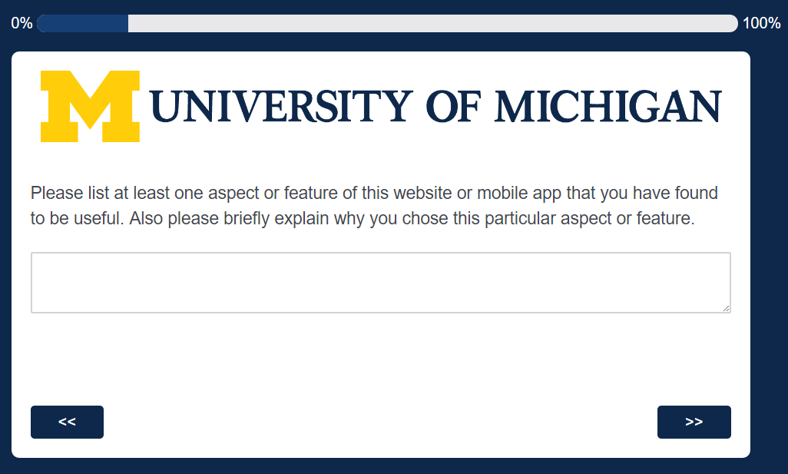

Problem
How does using Internet-connected devices such as mobile phones and computers on a daily basis affect users’ goals and motivations?
Research Process
Operationalization of Concepts
The two concepts I want to define for this research project are:
Experiences of using internet-connected devices
And users' goals and motivations.
The former can be divided into three sub-topics:
User's reasons for using specific digital products (desktop/mobile applications and websites)
Their main objectives for using these products
And their enjoyment and frustrations with these products.
The latter can be divided into two sub-topics:
The success a user achieves (or fails to achieve) for his or her predetermined goals when using a digital product.
And the motivation (or lack thereof) to revisit and reuse those products to complete similar tasks at a different time, and reasons for making these decisions.
Method
Using Qualtrics survey software and snowball sampling, I am collecting survey responses from college students as well as older adults to understand the impact that digital devices have on their lives.
Here are some of the screencaps from the survey:





Here is the full survey PDF file.
Stay tuned for the results of the survey.